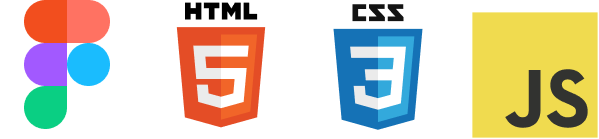

Proyecto #1
2022Son muchos los programadores que cuentan con un porfolio web. Los perfiles más comunes de porfolio son los que presentan a un programador frontend y/o diseñador, variando en cada uno el porcentaje entre las dos partes, a veces difíciles de distinguir.
Investigación
El reto
Un buen porfolio debe plasmar, de la forma más próxima posible, quién eres tú. Y que la persona que llegue a la web tenga una primera imagen real sobre ti. Luego, debe llamar la atención, puesto que los reclutadores pasan horas analizando curriculums y portfolios, hay que intentar diferenciarse aunque no sea sencillo.
Luego, debe llamar la atención, puesto que los reclutadores pasan horas analizando curriculums y portfolios, hay que intentar diferenciarse aunque no sea sencillo.
Pero el objetivo final de un porfolio es el mismo que en el que otras épocas anteriores tenía un currículum en papel: ocupar un puesto de trabajo, venderse. Por lo que habrá que prestar especial atención al contenido que vamos a incluir.
Contenido
Tras analizar un gran número de porfolios de programadores/diseñadores, teniendo en cuenta la trayectoria que aseguran tener, los trabajos personales que mencionan y el número de seguidores en redes (para seguir los pasos de casos de éxito), el contenido que debe tener un portfolio exitoso es el siguiente:
- Sobre mi
- Trayectoria profesional.
- Proyectos personales
- Conocimientos
- Contacto
- Presentación. Explicación en texto plano, quien eres, breve historia; estudios y trabajos destacados, conocimientos, aspiraciones…
- Nombrar empresas donde has trabajado y, de forma ambigua, tu función en ellas.
- Uno de los temas recurrentes en un proceso de selección es la experiencia.
- Al ser tan amplio el mundo del desarrollo web y del diseño es recomendable indicar que programas, lenguajes y tecnologías conoces.
- Algunos puestos pueden requerir de habilidades creativas o autodidactas.
- Al ser tan amplio el mundo del desarrollo web y del diseño es recomendable indicar que programas, lenguajes y tecnologías conoces.
- Uno de los motivos más importantes en un proceso de selección es lo que sabes hacer. Habla sobre habilidades y educación.
- Antes de el objetivo final del porfolio (conseguir el puesto de trabajo) debemos conseguir que una empresa contacte con nosotros, por lo que una parte imprescindible del portfolio es la sección de contacto.
- Es suficiente con un formulario o poner tu correo electrónico, aunque puedes poner tus redes sociales, teniendo en cuenta que el usuario puede ver el contenido que hayas publicado.
No todo vale. Se debe seleccionar con detenimiento el contenido que va a ser publicado para que no te aleje del objetivo final. Debemos evitar:
- Mentiras.
- Experiencia irrelevante.
- Aficiones irrelevantes.
Diseño
Antes de comenzar la construcción del proyecto, una parte imprescindible es definir el diseño, mediante prototipos y maquetas.
La difrerencia entre haber definido el diseño antes de empezar a programar puede suponer una gran diferencia de tiempo.
Boceto
Estilo
- Negro Elegancia, respeto, misterio.
- Blanco Simplicidad, pureza, claridad.
- Verde Crecimiento, calma, frescura.
- Rojo Pasión, aventura, valor.
Tecnologías empleadas
Otras tecnologías usadas
- https://michalsnik.github.io/aos/